In chapter 2 we introduced polygonal complexes (as a generalization of simplicial surfaces). They are based on incidence structures, which were analysed in chapter 3.
This chapter deals with the construction of custom polygonal complexes and simplicial surfaces. This package offers three different ways to construct a polygonal complex "from scratch":
Choose from a few standard example (like platonic solids). This is covered in the later sections of chapter 14.
Define it directly by its incidence structure (this will be the main content of this chapter).
Use the surface database to find appropriate complexes. This will be handled in the first section of chapter 14.
For simplicial surfaces another and more convenient constructor is the constructor
SimplicialSurfaceByUmbrellaDescriptor( edgeFacePaths ).
All other constructures which work for general polygonal complexes are structured like [Type]By[Method](args), e.g.
PolygonalComplexByDownwardIncidence( verticesOfEdges, edgesOfFaces )
They are mainly distinguished by the different attributes they need to construct the incidence structures:
DownwardIncidence (4.1): VerticesOfEdges (3.2-3), EdgesOfFaces (3.2-6)
UpwardIncidence (4.2): EdgesOfVertices (3.2-1), FacesOfEdges (3.2-4)
The DownwardIncidence-constructors are based on the attributes VerticesOfEdges (3.2-3) and EdgesOfFaces (3.2-6). From these any polygonal structure from chapter 2 can be build.
To use the constructor, we need to describe two incidence relations:
incidence between vertices and edges (the argument verticesOfEdges)
incidence between edges and faces (the argument edgesOfFaces)
As an example, consider the following polygonal surface:
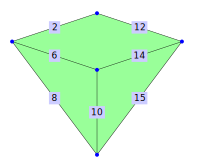
Both of the incidence relations described above are given as lists. The list verticesOfEdges contains an entry for each edge of the polygonal surface. This entry contains the set of all vertices that are incident to that edge.
gap> verticesOfEdges := > [,[3,5],,,,[3,7],,[3,11],,[7,11],,[5,13],,[7,13],[11,13]]; [ , [ 3, 5 ],,,, [ 3, 7 ],, [ 3, 11 ],, [ 7, 11 ],, [ 5, 13 ],, [ 7, 13 ], [ 11, 13 ] ]
Similarly the list edgesOfFaces has an entry for each face with the set of incident edges.
gap> edgesOfFaces := [ [2,6,12,14], , , [6,8,10], , , , , [10,14,15] ]; [ [ 2, 6, 12, 14 ],,, [ 6, 8, 10 ],,,,, [ 10, 14, 15 ] ]
With these two lists we can construct the desired polygonal surface.
gap> PolygonalSurfaceByDownwardIncidence( verticesOfEdges, edgesOfFaces );;
The DownwardIncidence-constructors also allow the optional arguments vertices, edges and faces. If those sets are given, the incidence information is checked for compatibility with them, that is (1) the integers in faces correspond to the bound positions of edgesOfFaces, (2) the integers in edges are those occurring in the entries of edgesOfFaces and also correspond to the bound entries of verticesOfEdges and (3) the integers in verties are those occurring in the entries of verticesOfEdges. This is not strictly necessary since this information can be deduced from the lists verticesOfEdges and edgesOfFaces.
In practice it is common to make mistakes in manually giving these lists. Especially in such situations it is recommended to use the optional arguments as they might catch some mistakes.
To make giving these lists easier, each of these sets can be replaces by a positive integer n, which will be interpreted as the set [1,...,n].
gap> PolygonalSurfaceByDownwardIncidence( [3,5,7,11,13], [2,6,8,10,12,14,15], > [1,4,9], verticesOfEdges, edgesOfFaces );;
The name DownwardIncidence stems from the fact that the incidence relation is given by referring to structures of lower dimension - an edge (dimension 1) is defined by two vertices (dimension 0) and a face (dimension 2) is defined by edges.
‣ PolygonalComplexByDownwardIncidence( verticesOfEdges, edgesOfFaces ) | ( operation ) |
‣ PolygonalComplexByDownwardIncidence( vertices, edges, faces, verticesOfEdges, edgesOfFaces ) | ( operation ) |
‣ PolygonalComplexByDownwardIncidenceNC( verticesOfEdges, edgesOfFaces ) | ( operation ) |
‣ PolygonalComplexByDownwardIncidenceNC( vertices, edges, faces, verticesOfEdges, edgesOfFaces ) | ( operation ) |
Returns: a polygonal complex
This method constructs a polygonal complex (2.1) where vertices, edges and faces are represented by positive integers. It is based on the attributes VerticesOfEdges (3.2-3) and EdgesOfFaces (3.2-6) and takes these arguments:
OPTIONAL: Each of the optional arguments vertices, edges and faces is either a set of positive integers or a positive integer. In the latter case, an integer n represents the set [1,...,n].
Although these arguments can be deduced from the non-optional arguments, their use is recommended to catch mistakes in these other arguments.
verticesOfEdges: A list that has an entry for each edge (a positive integer). This entry has to be a list of the two vertices (as positive integers) of this edge.
edgesOfFaces: A list that has an entry for each face (a positive integer). This entry has to be a list of the edges (as positive integers) of this face.
The method checks whether the answer to each of the following questions is true. None of these checks will be performed by the NC-version.
Are the optional arguments vertices, edges and faces either positive integers or sets of positive integers?
Are verticesOfEdges and edgesOfFaces lists where the entries are lists of positive integers?
Is every bound entry of verticesOfEdges a list with exactly two entries that are different?
Does every bound entry of edgesOfFaces contain at least two elements?
If vertices is given, is Union(verticesOfEdges) = vertices?
Are the bound positions of verticesOfEdges equal to Union(edgesOfFaces)? If edges is given, is it equal to those two sets?
If faces is given, is it equal to the bound positions of edgesOfFaces?
As an example consider the following net of a polygonal complex (note, there are both vertex and edge ramifications):
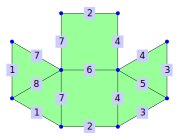
gap> complex := PolygonalComplexByDownwardIncidence( > [[1,2],[2,3],[1,3],[3,6],[1,6],[6,5],[2,5],[1,5]], > [[1,7,8],[1,7,8],[2,4,6,7],[2,4,6,7],[3,4,5],[3,4,5]]);; gap> RamifiedVertices(complex); [ 1 ] gap> ChaoticVertices(complex); [ 2, 3, 5, 6 ]
‣ PolygonalSurfaceByDownwardIncidence( verticesOfEdges, edgesOfFaces ) | ( operation ) |
‣ PolygonalSurfaceByDownwardIncidence( vertices, edges, faces, verticesOfEdges, edgesOfFaces ) | ( operation ) |
‣ PolygonalSurfaceByDownwardIncidenceNC( verticesOfEdges, edgesOfFaces ) | ( operation ) |
‣ PolygonalSurfaceByDownwardIncidenceNC( vertices, edges, faces, verticesOfEdges, edgesOfFaces ) | ( operation ) |
Returns: a polygonal surface
This method constructs a polygonal surface (2.3) where vertices, edges and faces are represented by positive integers. It is based on the attributes VerticesOfEdges (3.2-3) and EdgesOfFaces (3.2-6) and takes these arguments:
OPTIONAL: Each of the optional arguments vertices, edges and faces is either a set of positive integers or a positive integer. In the latter case, an integer n represents the set [1,...,n].
Although these arguments can be deduced from the non-optional arguments, their use is recommended to catch mistakes in these other arguments.
verticesOfEdges: A list that has an entry for each edge (a positive integer). This entry has to be a list of the two vertices (as positive integers) of this edge.
edgesOfFaces: A list that has an entry for each face (a positive integer). This entry has to be a list of the edges (as positive integers) of this face.
The method checks whether the answer to each of the following questions is true. None of these checks will be performed by the NC-version.
Are the optional arguments vertices, edges and faces either positive integers or sets of positive integers?
Are verticesOfEdges and edgesOfFaces lists where the entries are lists of positive integers?
Is every bound entry of verticesOfEdges a list with exactly two entries that are different?
Does every bound entry of edgesOfFaces contain at least two elements?
If vertices is given, is Union(verticesOfEdges) = vertices?
Are the bound positions of verticesOfEdges equal to Union(edgesOfFaces)? If edges is given, is it equal to those two sets?
If faces is given, is it equal to the bound positions of edgesOfFaces?
As an example consider the following net of a simplicial surface:
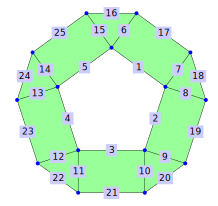
gap> surf := PolygonalSurfaceByDownwardIncidence( > [[1,2],[2,3],[3,4],[4,5],[5,1], > [1,6],[2,7],[2,8],[3,9],[3,10],[4,11],[4,12],[5,13],[5,14],[1,15], > [6,15],[6,7],[7,8],[8,9],[9,10],[10,11],[11,12],[12,13],[13,14],[14,15]], > [[6,15,16],[1,6,7,17],[7,8,18],[2,8,9,19],[9,10,20],[3,10,11,21], > [11,12,22],[4,12,13,23],[13,14,24],[5,14,15,25]]);; gap> IsClosedSurface(surf); false gap> PerimeterOfHoles(surf); [ (v1, E1, v2, E2, v3, E3, v4, E4, v5, E5, v1), (v6, E16, v15, E25, v14, E24, v13, E23, v12, E22, v11, E21, v10, E20, v9, E19, v8, E18, v7, E17, v6) ]
‣ TriangularComplexByDownwardIncidence( verticesOfEdges, edgesOfFaces ) | ( operation ) |
‣ TriangularComplexByDownwardIncidence( vertices, edges, faces, verticesOfEdges, edgesOfFaces ) | ( operation ) |
‣ TriangularComplexByDownwardIncidenceNC( verticesOfEdges, edgesOfFaces ) | ( operation ) |
‣ TriangularComplexByDownwardIncidenceNC( vertices, edges, faces, verticesOfEdges, edgesOfFaces ) | ( operation ) |
Returns: a triangular complex
This method constructs a triangular complex (2.1) where vertices, edges and faces are represented by positive integers. It is based on the attributes VerticesOfEdges (3.2-3) and EdgesOfFaces (3.2-6) and takes these arguments:
OPTIONAL: Each of the optional arguments vertices, edges and faces is either a set of positive integers or a positive integer. In the latter case, an integer n represents the set [1,...,n].
Although these arguments can be deduced from the non-optional arguments, their use is recommended to catch mistakes in these other arguments.
verticesOfEdges: A list that has an entry for each edge (a positive integer). This entry has to be a list of the two vertices (as positive integers) of this edge.
edgesOfFaces: A list that has an entry for each face (a positive integer). This entry has to be a list of the edges (as positive integers) of this face.
The method checks whether the answer to each of the following questions is true. None of these checks will be performed by the NC-version.
Are the optional arguments vertices, edges and faces either positive integers or sets of positive integers?
Are verticesOfEdges and edgesOfFaces lists where the entries are lists of positive integers?
Is every bound entry of verticesOfEdges a list with exactly two entries that are different?
Does every bound entry of edgesOfFaces contain at least two elements?
If vertices is given, is Union(verticesOfEdges) = vertices?
Are the bound positions of verticesOfEdges equal to Union(edgesOfFaces)? If edges is given, is it equal to those two sets?
If faces is given, is it equal to the bound positions of edgesOfFaces?
As an example consider the following net of a triangular complex (at the vertices and edges marked red, there are ramifications):
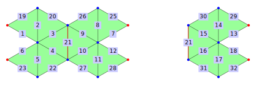
gap> complex := TriangularComplexByDownwardIncidence( > [[1,7],[2,7],[3,7],[4,7],[5,7],[6,7], > [1,9],[8,9],[3,9],[4,9],[9,10],[6,9], > [1,12],[11,12],[3,12],[4,12],[12,13],[6,12], > [1,2],[2,3],[3,4],[4,5],[5,6],,[1,8],[3,8], > [4,10],[6,10],[1,11],[3,11],[4,13],[6,13]], > [[1,2,19],[2,3,20],[3,4,21],[4,5,22],[5,6,23], > [7,8,25],[8,9,26],[9,10,21],[10,11,27],[11,12,28], > [13,14,29],[14,15,30],[15,16,21],[16,17,31],[17,18,32]]);; gap> UmbrellaPathPartitionOfVertex(complex, 1); [ | e1, F1, e19 |, | e7, F6, e25 |, | e13, F11, e29 | ] gap> UmbrellaPathPartitionOfVertex(complex, 6); [ | e6, F5, e23 |, | e12, F10, e28 |, | e18, F15, e32 | ] gap> FacesOfEdge(complex, 21); [ 3, 8, 13 ]
‣ SimplicialSurfaceByDownwardIncidence( verticesOfEdges, edgesOfFaces ) | ( operation ) |
‣ SimplicialSurfaceByDownwardIncidence( vertices, edges, faces, verticesOfEdges, edgesOfFaces ) | ( operation ) |
‣ SimplicialSurfaceByDownwardIncidenceNC( verticesOfEdges, edgesOfFaces ) | ( operation ) |
‣ SimplicialSurfaceByDownwardIncidenceNC( vertices, edges, faces, verticesOfEdges, edgesOfFaces ) | ( operation ) |
Returns: a simplicial surface
This method constructs a simplicial surface (2.3) where vertices, edges and faces are represented by positive integers. It is based on the attributes VerticesOfEdges (3.2-3) and EdgesOfFaces (3.2-6) and takes these arguments:
OPTIONAL: Each of the optional arguments vertices, edges and faces is either a set of positive integers or a positive integer. In the latter case, an integer n represents the set [1,...,n].
Although these arguments can be deduced from the non-optional arguments, their use is recommended to catch mistakes in these other arguments.
verticesOfEdges: A list that has an entry for each edge (a positive integer). This entry has to be a list of the two vertices (as positive integers) of this edge.
edgesOfFaces: A list that has an entry for each face (a positive integer). This entry has to be a list of the edges (as positive integers) of this face.
The method checks whether the answer to each of the following questions is true. None of these checks will be performed by the NC-version.
Are the optional arguments vertices, edges and faces either positive integers or sets of positive integers?
Are verticesOfEdges and edgesOfFaces lists where the entries are lists of positive integers?
Is every bound entry of verticesOfEdges a list with exactly two entries that are different?
Does every bound entry of edgesOfFaces contain at least two elements?
If vertices is given, is Union(verticesOfEdges) = vertices?
Are the bound positions of verticesOfEdges equal to Union(edgesOfFaces)? If edges is given, is it equal to those two sets?
If faces is given, is it equal to the bound positions of edgesOfFaces?
As an example consider the following net of a simplicial surface:
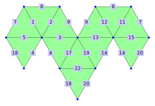
gap> surf := SimplicialSurfaceByDownwardIncidence( > [[1,5],[2,5],[5,6],[5,9],[4,5],,[1,4],[1,2],[2,6],, > [1,7],[2,7],[6,7],[7,10],[4,7],,[6,9],[4,9],[6,10],[4,10],,[9,10]], > [[1,5,7],[1,2,8],[2,3,9],[3,4,17],[4,5,18],,,,[17,19,22], > [18,20,22],[7,11,15],[8,11,12],[9,12,13],[13,14,19],[14,15,20]]);; gap> Vertices(surf); [ 1, 2, 4, 5, 6, 7, 9, 10 ] gap> Edges(surf); [ 1, 2, 3, 4, 5, 7, 8, 9, 11, 12, 13, 14, 15, 17, 18, 19, 20, 22 ] gap> Faces(surf); [ 1, 2, 3, 4, 5, 9, 10, 11, 12, 13, 14, 15 ] gap> EulerCharacteristic(surf); 2 gap> IsClosedSurface(surf); true
The UpwardIncidence-constructors are based on the attributes EdgesOfVertices (3.2-1) and FacesOfEdges (3.2-4). From these any polygonal structure from chapter 2 can be build.
To use the constructor, we need to describe two incidence relations:
incidence between edges and vertices (the argument edgesOfVertices)
incidence between faces and edges (the argument facesOfEdges)
As an example, consider the following polygonal surface:
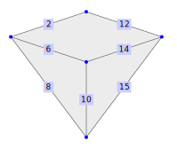
Both of the incidence relations described above are given as lists. The list edgesOfVertices contains an entry for each vertex of the polygonal surface. This entry contains the set of all edges that are incident to that vertex.
gap> edgesOfVertices := > [,, [2,6,8],, [2,12],, [6,10,14],,,, [8,10,15],, [12,14,15] ]; [ ,, [ 2, 6, 8 ],, [ 2, 12 ],, [ 6, 10, 14 ],,,, [ 8, 10, 15 ],, [ 12, 14, 15 ] ]
Similarly the list facesOfEdges has an entry for each edge with the set of incident faces.
gap> facesOfEdges := [ , [1], , , , [1,4], , [4], , [4,9], , [1], , [1,9], [9] ]; [ , [ 1 ],,,, [ 1, 4 ],, [ 4 ],, [ 4, 9 ],, [ 1 ],, [ 1, 9 ], [ 9 ] ]
With these two lists we can construct the desired polygonal surface.
gap> PolygonalSurfaceByUpwardIncidence( edgesOfVertices, facesOfEdges );;
The UpwardIncidence-constructors also allow the optional arguments vertices, edges and faces. If those sets are given, the incidence information is checked for compatibility with them. This is not strictly necessary since this information can be deduced from the lists edgesOfVertices and facesOfEdges.
In practice it is common to make mistakes in manually giving these lists. Especially in such situations it is recommended to use the optional arguments as they might catch some mistakes.
To make giving these lists easier, each of these sets can be replaces by a positive integer n, which will be interpreted as the set [1,...,n].
gap> PolygonalSurfaceByUpwardIncidence( [3,5,7,11,13], [2,6,8,10,12,14,15], > [1,4,9], edgesOfVertices, facesOfEdges );;
The name UpwardIncidence stems from the fact that the incidence relation is given by referring to structures of higher dimension - a vertex (dimension 0) is defined by its edges (dimension 1) and an edge is defined by faces (dimension 2).
‣ PolygonalComplexByUpwardIncidence( edgesOfVertices, facesOfEdges ) | ( operation ) |
‣ PolygonalComplexByUpwardIncidence( vertices, edges, faces, edgesOfVertices, facesOfEdges ) | ( operation ) |
‣ PolygonalComplexByUpwardIncidenceNC( edgesOfVertices, facesOfEdges ) | ( operation ) |
‣ PolygonalComplexByUpwardIncidenceNC( vertices, edges, faces, edgesOfVertices, facesOfEdges ) | ( operation ) |
Returns: a polygonal complex
This method constructs a polygonal complex (2.1) where vertices, edges and faces are represented by positive integers. It is based on the attributes EdgesOfVertices (3.2-1) and FacesOfEdges (3.2-4) and takes these arguments:
OPTIONAL: Each of the optional arguments vertices, edges and faces is either a set of positive integers or a positive integer. In the latter case, an integer n represents the set [1,...,n].
Although these arguments can be deduced from the non-optional arguments, their use is recommended to catch mistakes in these other arguments.
edgesOfVertices: A list that has an entry for each vertex (a positive integer). This entry has to be a list of the incident edges (as positive integers) of this vertex.
facesOfEdges: A list that has an entry for each edge (a positive integer). This entry has to be a list of the incident faces (as positive integers) of this edge.
The method checks whether the answer to each of the following questions is true. None of these checks will be performed by the NC-version.
Are the optional arguments vertices, edges and faces either positive integers or sets of positive integers?
Are edgesOfVertices and facesOfEdges lists where the entries are lists of positive integers?
Does every edge of the resulting polygonal complex has exactly two incident vertices?
Does every face of the resulting polygonal complex has at least two incident edges?
Does every bound entry of edgesOfFaces contain at least two elements?
If vertices is given, is it equal to the bound positions of edgesOfVertices?
Are the bound positions of facesOfEdges equal to Union(edgesOfVertices)? If edges is given, is it equal to those two sets?
If faces is given, is it equal to Union(facesOfEdges)?
As an example consider the following net of a polygonal complex (note, there are both vertex and edge ramifications):
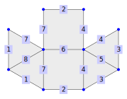
gap> complex := PolygonalComplexByUpwardIncidence( > [[1,8,3,5],[1,2,7],[2,3,4],,[6,7,8],[4,5,6]], > [[1,2],[3,4],[5,6],[3,4,5,6],[5,6],[3,4],[1,2,3,4],[1,2]]);; gap> RamifiedVertices(complex); [ 1 ] gap> ChaoticVertices(complex); [ 2, 3, 5, 6 ]
‣ PolygonalSurfaceByUpwardIncidence( edgesOfVertices, facesOfEdges ) | ( operation ) |
‣ PolygonalSurfaceByUpwardIncidence( vertices, edges, faces, edgesOfVertices, facesOfEdges ) | ( operation ) |
‣ PolygonalSurfaceByUpwardIncidenceNC( edgesOfVertices, facesOfEdges ) | ( operation ) |
‣ PolygonalSurfaceByUpwardIncidenceNC( vertices, edges, faces, edgesOfVertices, facesOfEdges ) | ( operation ) |
Returns: a polygonal surface
This method constructs a polygonal surface (2.3) where vertices, edges and faces are represented by positive integers. It is based on the attributes EdgesOfVertices (3.2-1) and FacesOfEdges (3.2-4) and takes these arguments:
OPTIONAL: Each of the optional arguments vertices, edges and faces is either a set of positive integers or a positive integer. In the latter case, an integer n represents the set [1,...,n].
Although these arguments can be deduced from the non-optional arguments, their use is recommended to catch mistakes in these other arguments.
edgesOfVertices: A list that has an entry for each vertex (a positive integer). This entry has to be a list of the incident edges (as positive integers) of this vertex.
facesOfEdges: A list that has an entry for each edge (a positive integer). This entry has to be a list of the incident faces (as positive integers) of this edge.
The method checks whether the answer to each of the following questions is true. None of these checks will be performed by the NC-version.
Are the optional arguments vertices, edges and faces either positive integers or sets of positive integers?
Are edgesOfVertices and facesOfEdges lists where the entries are lists of positive integers?
Does every edge of the resulting polygonal complex has exactly two incident vertices?
Does every face of the resulting polygonal complex has at least two incident edges?
Does every bound entry of edgesOfFaces contain at least two elements?
If vertices is given, is it equal to the bound positions of edgesOfVertices?
Are the bound positions of facesOfEdges equal to Union(edgesOfVertices)? If edges is given, is it equal to those two sets?
If faces is given, is it equal to Union(facesOfEdges)?
As an example consider the following net of a simplicial surface:
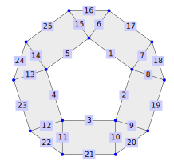
gap> surf := PolygonalSurfaceByUpwardIncidence( > [[1,5,6,15],[1,2,7,8],[2,3,9,10],[3,4,11,12],[4,5,13,14], > [6,16,17],[7,17,18],[8,18,19],[9,19,20],[10,20,21],[11,21,22], > [12,22,23],[13,23,24],[14,24,25],[15,16,25]], > [[2],[4],[6],[8],[10],[1,2],[2,3],[3,4],[4,5],[5,6],[6,7],[7,8], > [8,9],[9,10],[1,10],[1],[2],[3],[4],[5],[6],[7],[8],[9],[10]]);; gap> IsClosedSurface(surf); false gap> PerimeterOfHoles(surf); [ (v1, E1, v2, E2, v3, E3, v4, E4, v5, E5, v1), (v6, E16, v15, E25, v14, E24, v13, E23, v12, E22, v11, E21, v10, E20, v9, E19, v8, E18, v7, E17, v6) ]
‣ TriangularComplexByUpwardIncidence( edgesOfVertices, facesOfEdges ) | ( operation ) |
‣ TriangularComplexByUpwardIncidence( vertices, edges, faces, edgesOfVertices, facesOfEdges ) | ( operation ) |
‣ TriangularComplexByUpwardIncidenceNC( edgesOfVertices, facesOfEdges ) | ( operation ) |
‣ TriangularComplexByUpwardIncidenceNC( vertices, edges, faces, edgesOfVertices, facesOfEdges ) | ( operation ) |
Returns: a triangular complex
This method constructs a triangular complex (2.1) where vertices, edges and faces are represented by positive integers. It is based on the attributes EdgesOfVertices (3.2-1) and FacesOfEdges (3.2-4) and takes these arguments:
OPTIONAL: Each of the optional arguments vertices, edges and faces is either a set of positive integers or a positive integer. In the latter case, an integer n represents the set [1,...,n].
Although these arguments can be deduced from the non-optional arguments, their use is recommended to catch mistakes in these other arguments.
edgesOfVertices: A list that has an entry for each vertex (a positive integer). This entry has to be a list of the incident edges (as positive integers) of this vertex.
facesOfEdges: A list that has an entry for each edge (a positive integer). This entry has to be a list of the incident faces (as positive integers) of this edge.
The method checks whether the answer to each of the following questions is true. None of these checks will be performed by the NC-version.
Are the optional arguments vertices, edges and faces either positive integers or sets of positive integers?
Are edgesOfVertices and facesOfEdges lists where the entries are lists of positive integers?
Does every edge of the resulting polygonal complex has exactly two incident vertices?
Does every face of the resulting polygonal complex has at least two incident edges?
Does every bound entry of edgesOfFaces contain at least two elements?
If vertices is given, is it equal to the bound positions of edgesOfVertices?
Are the bound positions of facesOfEdges equal to Union(edgesOfVertices)? If edges is given, is it equal to those two sets?
If faces is given, is it equal to Union(facesOfEdges)?
As an example consider the following net of a triangular complex (at the vertices and edges marked red, there are ramifications):
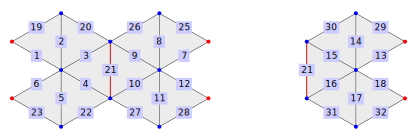
gap> complex := TriangularComplexByUpwardIncidence( > [[1,19,7,25,13,29],[2,19,20], > [20,3,21,9,26,15,30],[22,4,21,10,27,16,31], > [23,5,22],[6,23,12,28,18,32],[1,2,3,4,5,6],[26,8,25], > [7,8,9,10,11,12],[27,11,28],[30,14,29],[13,14,15,16,17,18], > [31,17,32]], > [[1],[1,2],[2,3],[3,4],[4,5],[5], > [6],[6,7],[7,8],[8,9],[9,10],[10], > [11],[11,12],[12,13],[13,14],[14,15],[15], > [1],[2],[3,8,13],[4],[5],,[6],[7],[9],[10],[11],[12],[14],[15]]);; gap> UmbrellaPathPartitionOfVertex(complex, 1); [ | e1, F1, e19 |, | e7, F6, e25 |, | e13, F11, e29 | ] gap> UmbrellaPathPartitionOfVertex(complex, 6); [ | e6, F5, e23 |, | e12, F10, e28 |, | e18, F15, e32 | ] gap> FacesOfEdge(complex, 21); [ 3, 8, 13 ]
‣ SimplicialSurfaceByUpwardIncidence( edgesOfVertices, facesOfEdges ) | ( operation ) |
‣ SimplicialSurfaceByUpwardIncidence( vertices, edges, faces, edgesOfVertices, facesOfEdges ) | ( operation ) |
‣ SimplicialSurfaceByUpwardIncidenceNC( edgesOfVertices, facesOfEdges ) | ( operation ) |
‣ SimplicialSurfaceByUpwardIncidenceNC( vertices, edges, faces, edgesOfVertices, facesOfEdges ) | ( operation ) |
Returns: a simplicial surface
This method constructs a simplicial surface (2.3) where vertices, edges and faces are represented by positive integers. It is based on the attributes EdgesOfVertices (3.2-1) and FacesOfEdges (3.2-4) and takes these arguments:
OPTIONAL: Each of the optional arguments vertices, edges and faces is either a set of positive integers or a positive integer. In the latter case, an integer n represents the set [1,...,n].
Although these arguments can be deduced from the non-optional arguments, their use is recommended to catch mistakes in these other arguments.
edgesOfVertices: A list that has an entry for each vertex (a positive integer). This entry has to be a list of the incident edges (as positive integers) of this vertex.
facesOfEdges: A list that has an entry for each edge (a positive integer). This entry has to be a list of the incident faces (as positive integers) of this edge.
The method checks whether the answer to each of the following questions is true. None of these checks will be performed by the NC-version.
Are the optional arguments vertices, edges and faces either positive integers or sets of positive integers?
Are edgesOfVertices and facesOfEdges lists where the entries are lists of positive integers?
Does every edge of the resulting polygonal complex has exactly two incident vertices?
Does every face of the resulting polygonal complex has at least two incident edges?
Does every bound entry of edgesOfFaces contain at least two elements?
If vertices is given, is it equal to the bound positions of edgesOfVertices?
Are the bound positions of facesOfEdges equal to Union(edgesOfVertices)? If edges is given, is it equal to those two sets?
If faces is given, is it equal to Union(facesOfEdges)?
As an example consider the following net of a simplicial surface:
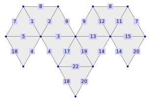
gap> surf := SimplicialSurfaceByUpwardIncidence( > [[1,7,8,11],[2,8,9,12],,[5,7,15,18,20],[1,2,3,4,5], > [3,9,13,17,19],[11,12,13,14,15],,[4,17,18,22],[14,19,20,22]], > [[1,2],[2,3],[3,4],[4,5],[1,5],,[1,11],[2,12],[3,13],, > [11,12],[12,13],[13,14],[14,15],[11,15],, > [4,9],[5,10],[9,14],[10,15],,[9,10]]);; gap> Vertices(surf); [ 1, 2, 4, 5, 6, 7, 9, 10 ] gap> Edges(surf); [ 1, 2, 3, 4, 5, 7, 8, 9, 11, 12, 13, 14, 15, 17, 18, 19, 20, 22 ] gap> Faces(surf); [ 1, 2, 3, 4, 5, 9, 10, 11, 12, 13, 14, 15 ] gap> EulerCharacteristic(surf); 2 gap> IsClosedSurface(surf); true
The VerticesInFaces-constructors are based on the attribute VerticesOfFaces (3.2-5) for triangular faces and an oriented version of it for non-triangular ones.
To use the constructor we need to know the incidence relation between vertices and faces (the edge information has to be deduced from that). Therefore it is assumed that every edge is uniquely identified by its incident vertices. Apart from this restriction, every polygonal structure from chapter 2 can be build.
Consider the following polygonal surface:
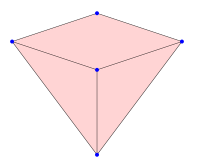
The face with number 4 is incident to the vertices [3,7,11]. Since the edges of a triangle are uniquely determined by its vertices, the constructor will assume that the edges [3,7], [3,11] and [7,11] exist.
The face 9 with the incident vertices [7,11,13] is handled in the same way. This triangle also contains an edge with vertices 7 and 11, which is assumed to be the same edge [7,11] of the face 4.
This deduction of edges does not work if a face is incident to more than three vertices. Here the face with number 1 is incident to four different vertices: [3,5,7,13]. As it is not obvious which of these are connected by edges, the method needs additional information. If the vertices are given as the list [3,5,13,7], the edges can be defined by adjacent entries in this list (the first and last entry count as adjacent).
The full rules for the edge deduction are:
An edge is uniquely identified by its incident vertices.
If a face is given by the vertex list [v_1, v_2, ..., v_k] then adjacent vertices in the list are assumed to form an edge of the face (first and last vertex count as adjacent). In this case we would have the edges [v_1,v_2], [v_2,v_3], ..., [v_k,v_1].
The incidence information is given as a list that has an entry for each face. For every face this entry is a list of the incident vertices, where the order of the vertices in the list determines the edges (if there are more than three vertices).
gap> verticesInFaces := [ [3,5,13,7], , , [3,11,7], , , , , [7,11,13] ]; [ [ 3, 5, 13, 7 ],,, [ 3, 11, 7 ],,,,, [ 7, 11, 13 ] ] gap> PolygonalSurfaceByVerticesInFaces( verticesInFaces );;
The VerticesInFaces-constructors also allow the optional arguments vertices and faces. If those sets are given, the incidence information is checked for compatibility with them. This is very useful in practice to notice typos in the incidence relations. As this can be deduced from the argument verticesInFaces it is not necessary to give these optional arguments.
In practice it is common to make mistakes in manually typing this list. Especially in a situation like this it is recommended to use the optional arguments to catch some mistakes.
To make this easier, each of these optional arguments can be replaced by a positive integer n (which will be interpreted as the set [1,...,n]).
gap> PolygonalSurfaceByVerticesInFaces( [3,5,7,11,13], [1,4,9], verticesInFaces );;
‣ PolygonalComplexByVerticesInFaces( verticesInFaces ) | ( operation ) |
‣ PolygonalComplexByVerticesInFaces( vertices, faces, verticesInFaces ) | ( operation ) |
‣ PolygonalComplexByVerticesInFacesNC( verticesInFaces ) | ( operation ) |
‣ PolygonalComplexByVerticesInFacesNC( vertices, faces, verticesInFaces ) | ( operation ) |
Returns: a polygonal complex
This method constructs a polygonal complex (2.1) where vertices, edges and faces are represented by positive integers. It is based on the attributes VerticesOfFaces (3.2-5) and requires that the edges be uniquely defined by their incident vertices. It takes the following arguments:
OPTIONAL: Each of the optional arguments vertices, edges and faces is either a set of positive integers or a positive integer. In the latter case, an integer n represents the set [1,...,n].
Although these arguments can be deduced from the non-optional arguments, their use is recommended to catch mistakes in these other arguments.
verticesInFaces: A list that has an entry for each positive integer corresponding to a face. This entry is a list of positive integers [v_1, v_2 , ..., v_k ], each corresponding to a vertex incident to the face. Moreover, two consecutive vertices in this list are the vertices of an edge incident to the face (here the first and last vertex count as consecutive).
The method checks whether the answer to each of the following questions is true. None of these checks will be performed by the NC-version.
Are the optional arguments vertices, edges and faces either positive integers or sets of positive integers?
Is verticesInFaces a list whose entries are lists of pairwise different positive integers?
Does every bound entry of verticesInFaces contain at least two elements?
If vertices is given, is Union(verticesInFaces) = vertices?
If faces is given, is it equal to the bound positions of verticesInFaces?
As an example consider the following net of a polygonal complex (note, there are both vertex and edge ramifications):
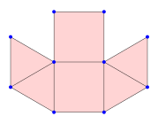
gap> complex := PolygonalComplexByVerticesInFaces( > [[1,2,5],[1,2,5],[2,3,6,5],[2,3,6,5],[1,6,3],[1,3,6]]);; gap> RamifiedVertices(complex); [ 1 ] gap> ChaoticVertices(complex); [ 2, 3, 5, 6 ]
‣ PolygonalSurfaceByVerticesInFaces( verticesInFaces ) | ( operation ) |
‣ PolygonalSurfaceByVerticesInFaces( vertices, faces, verticesInFaces ) | ( operation ) |
‣ PolygonalSurfaceByVerticesInFacesNC( verticesInFaces ) | ( operation ) |
‣ PolygonalSurfaceByVerticesInFacesNC( vertices, faces, verticesInFaces ) | ( operation ) |
Returns: a polygonal surface
This method constructs a polygonal surface (2.3) where vertices, edges and faces are represented by positive integers. It is based on the attributes VerticesOfFaces (3.2-5) and requires that the edges be uniquely defined by their incident vertices. It takes the following arguments:
OPTIONAL: Each of the optional arguments vertices, edges and faces is either a set of positive integers or a positive integer. In the latter case, an integer n represents the set [1,...,n].
Although these arguments can be deduced from the non-optional arguments, their use is recommended to catch mistakes in these other arguments.
verticesInFaces: A list that has an entry for each positive integer corresponding to a face. This entry is a list of positive integers [v_1, v_2 , ..., v_k ], each corresponding to a vertex incident to the face. Moreover, two consecutive vertices in this list are the vertices of an edge incident to the face (here the first and last vertex count as consecutive).
The method checks whether the answer to each of the following questions is true. None of these checks will be performed by the NC-version.
Are the optional arguments vertices, edges and faces either positive integers or sets of positive integers?
Is verticesInFaces a list whose entries are lists of pairwise different positive integers?
Does every bound entry of verticesInFaces contain at least two elements?
If vertices is given, is Union(verticesInFaces) = vertices?
If faces is given, is it equal to the bound positions of verticesInFaces?
As an example consider the following net of a simplicial surface:
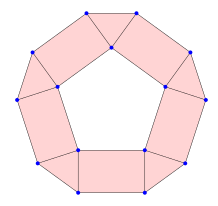
gap> surf := PolygonalSurfaceByVerticesInFaces( > [[1,6,15],[1,2,7,6],[2,7,8],[2,3,9,8],[3,9,10],[3,4,11,10],[4,11,12], > [4,5,13,12],[5,13,14],[1,5,14,15]]);; gap> IsClosedSurface(surf); false
‣ TriangularComplexByVerticesInFaces( verticesInFaces ) | ( operation ) |
‣ TriangularComplexByVerticesInFaces( vertices, faces, verticesInFaces ) | ( operation ) |
‣ TriangularComplexByVerticesInFacesNC( verticesInFaces ) | ( operation ) |
‣ TriangularComplexByVerticesInFacesNC( vertices, faces, verticesInFaces ) | ( operation ) |
Returns: a triangular complex
This method constructs a triangular complex (2.1) where vertices, edges and faces are represented by positive integers. It is based on the attributes VerticesOfFaces (3.2-5) and requires that the edges be uniquely defined by their incident vertices. It takes the following arguments:
OPTIONAL: Each of the optional arguments vertices, edges and faces is either a set of positive integers or a positive integer. In the latter case, an integer n represents the set [1,...,n].
Although these arguments can be deduced from the non-optional arguments, their use is recommended to catch mistakes in these other arguments.
verticesInFaces: A list that has an entry for each positive integer corresponding to a face. This entry is a list of positive integers [v_1, v_2 , ..., v_k ], each corresponding to a vertex incident to the face. Moreover, two consecutive vertices in this list are the vertices of an edge incident to the face (here the first and last vertex count as consecutive).
The method checks whether the answer to each of the following questions is true. None of these checks will be performed by the NC-version.
Are the optional arguments vertices, edges and faces either positive integers or sets of positive integers?
Is verticesInFaces a list whose entries are lists of pairwise different positive integers?
Does every bound entry of verticesInFaces contain at least two elements?
If vertices is given, is Union(verticesInFaces) = vertices?
If faces is given, is it equal to the bound positions of verticesInFaces?
As an example consider the following net of a triangular complex (at the vertices and edges marked red, there are ramifications):
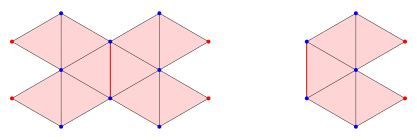
gap> complex := TriangularComplexByVerticesInFaces( > [[1,2,7],[2,3,7],[3,4,7],[4,5,7],[5,6,7], > [1,8,9],[3,8,9],[3,4,9],[4,10,9],[6,10,9], > [1,11,12],[3,11,12],[3,4,12],[4,13,12],[6,13,12]]);;
‣ SimplicialSurfaceByVerticesInFaces( verticesInFaces ) | ( operation ) |
‣ SimplicialSurfaceByVerticesInFaces( vertices, faces, verticesInFaces ) | ( operation ) |
‣ SimplicialSurfaceByVerticesInFacesNC( verticesInFaces ) | ( operation ) |
‣ SimplicialSurfaceByVerticesInFacesNC( vertices, faces, verticesInFaces ) | ( operation ) |
Returns: a simplicial surface
This method constructs a simplicial surface (2.3) where vertices, edges and faces are represented by positive integers. It is based on the attributes VerticesOfFaces (3.2-5) and requires that the edges be uniquely defined by their incident vertices. It takes the following arguments:
OPTIONAL: Each of the optional arguments vertices, edges and faces is either a set of positive integers or a positive integer. In the latter case, an integer n represents the set [1,...,n].
Although these arguments can be deduced from the non-optional arguments, their use is recommended to catch mistakes in these other arguments.
verticesInFaces: A list that has an entry for each positive integer corresponding to a face. This entry is a list of positive integers [v_1, v_2 , ..., v_k ], each corresponding to a vertex incident to the face. Moreover, two consecutive vertices in this list are the vertices of an edge incident to the face (here the first and last vertex count as consecutive).
The method checks whether the answer to each of the following questions is true. None of these checks will be performed by the NC-version.
Are the optional arguments vertices, edges and faces either positive integers or sets of positive integers?
Is verticesInFaces a list whose entries are lists of pairwise different positive integers?
Does every bound entry of verticesInFaces contain at least two elements?
If vertices is given, is Union(verticesInFaces) = vertices?
If faces is given, is it equal to the bound positions of verticesInFaces?
As an example consider the following net of a simplicial surface:
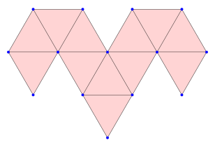
gap> surf := SimplicialSurfaceByVerticesInFaces( > [[1,4,5],[1,2,5],[2,5,6],[5,6,9],[4,5,9],,,, > [6,9,10],[4,9,10],[1,4,7],[1,2,7],[2,6,7],[6,7,10],[4,7,10]]);; gap> Vertices(surf); [ 1, 2, 4, 5, 6, 7, 9, 10 ] gap> NumberOfEdges(surf); 18 gap> Faces(surf); [ 1, 2, 3, 4, 5, 9, 10, 11, 12, 13, 14, 15 ] gap> EulerCharacteristic(surf); 2 gap> IsClosedSurface(surf); true
A very useful way of describing surfaces is by listing the umbrella paths around each vertex. Formally, an umbrella descriptor of a simplicial surface is a list umbdesc, describing a simplicial surface. The bound entries in umbdesc are cyclic permutations or lists of integers. The set of faces of the surface is the set of points which either are moved by a cyclic permutation or occur in a list in umbdesc. The edges of the surface correspond to pairs of faces (i,j), where either some cycle in umbdesc maps i to j or i and j occur as neighbours in a list. The vertices of the surface are the positive integers corresponding to the bound positions of umbdesc. If position i of umbdesc is bound, then the i-th entry represents the vertex with name i. If the vertex named i is inner, then the i-th entry in umbdesc is a cyclic permutation of the faces in the umbrella path around the vertex, mapping a face to an adjacent face. The order of the permutation is equal to the degree of the vertex. If the vertex named i is a boundary vertex, then the i-th entry in umbdesc is a list consisting of the faces in the umbrella path of the vertex such that adjacent faces are consecutive and the two faces with boundary edges are the first and the last entry of the list. The length of the list is equal to the degree of the vertex.
‣ UmbrellaDescriptorOfSurface( surface ) | ( operation ) |
Returns: a list
Let surf be a simplicial surface. This method returns an umbrella descriptor of surf, where an umbrella descriptor of a simplicial surface is a list umbdesc, describing a simplicial surface. The bound entries in umbdesc are cyclic permutations or lists of integers. The set of faces of the surface is the set of points which either are moved by a cyclic permutation or occur in a list in umbdesc. The edges of the surface correspond to pairs of faces (i,j), where either some cycle in umbdesc maps i to j or i and j occur as neighbours in a list. The vertices of the surface are the positive integers corresponding to the bound positions of umbdesc. If position i of umbdesc is bound, then the i-th entry represents the vertex with name i. If the vertex named i is inner, then the i-th entry in umbdesc is a cyclic permutation of the faces in the umbrella path around the vertex, mapping a face to an adjacent face. The order of the permutation is equal to the degree of the vertex. If the vertex named i is a boundary vertex, then the i-th entry in umbdesc is a list consisting of the faces in the umbrella path of the vertex such that adjacent faces are consecutive and the two faces with boundary edges are the first and the last entry of the list. The length of the list is equal to the degree of the vertex.
As an example consider the following net of a simplicial surface. Note that the surface has boundary edges. Moreover, the vertices 1,2,3, and 4 are inner vertices, while 5,6,7,8,9, and 10 are not. Accordingly, the umbrella descriptor of the surface will consist of cyclic permutations for the vertices 1,2,3, and 4 and of lists for the remaining vertices.
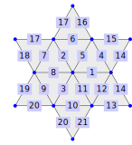
gap> surf := SimplicialSurfaceByVerticesInFaces( [ [ 1, 2, 5 ], [ 1, 3, 5 ], > [ 1, 3, 6 ], [ 1, 4, 6 ], [ 1, 4, 7 ], [ 1, 2, 7 ], [ 2, 7, 8 ], > [ 2, 5, 8 ], [ 3, 5, 9 ], [ 3, 6, 9 ], [ 4, 6, 10 ], [ 4, 7, 10 ] ]);; gap> UmbrellaDescriptorOfSurface(surf); [ (1,2,3,4,5,6), (1,8,7,6), (2,9,10,3), (4,11,12,5), [ 8, 1, 2, 9 ], [ 10, 3, 4, 11 ], [ 7, 6, 5, 12 ], [ 8, 7 ], [ 9, 10 ], [ 11, 12 ] ]
‣ UmbrellaTipDescriptorOfSurface( surface ) | ( operation ) |
Returns: a list
Let surf be a vertex faithful simplicial surface. This method returns an umbrella tip descriptor of surf, where an umbrella tip descriptor of a simplicial surface is a list umbtipdesc, describing a simplicial surface. The bound entries in umbtipdesc are cyclic permutations or lists of integers. The set of vertices of the surface is the set of points which either are moved by a cyclic permutation or occur in a list in umbtipdesc. The edges of the surface correspond to pairs of vertices (i,j), where i is the bound position of a cycle or list in umbtipdesc and j is a vertex that is moved by that cycle or in that list with position i in umbtipdesc. The faces correspond to tuples of vertices (i,j,k), where i is the bound position in umbtipdesc of a cycle or list and either that cycle maps j to k or j and k occur in that list as neighbours. The vertices of the surface can also be described as the positive integers corresponding to the bound positions of umbtipdesc. If position i of umbtipdesc is bound, then the i-th entry represents the vertex with name i. An umbrella tip path of a vertex is the umbrella path of a vertex, but instead of an edge-face path, one obtains the outer vertices of that edge path. If the vertex named i is inner, then the i-th entry in umbtipdesc is a cyclic permutation of the vertices in the umbrella tip path around the vertex, mapping a vertex to an adjacent vertex. The order of the permutation is equal to the vertex- and edge-degree of the vertex. If the vertex named i is a boundary vertex, then the i-th entry in umbtipdesc is a list consisting of the vertices in the umbrella tip path of the vertex such that adjacent vertices are consecutive and the two vertices with boundary edges are the first and the last entry of the list. The length of the list is equal to the vertex- and edge-degree of the vertex.
As an example consider the following net of a simplicial surface. Note that the surface has boundary edges. Moreover, the vertices 1,2,3, and 4 are inner vertices, while 5,6,7,8,9, and 10 are not. Accordingly, the umbrella tip descriptor of the surface will consist of cyclic permutations for the vertices 1,2,3, and 4 and of lists for the remaining vertices.
gap> surf := SimplicialSurfaceByVerticesInFaces( [ [ 1, 2, 5 ], [ 1, 3, 5 ], > [ 1, 3, 6 ], [ 1, 4, 6 ], [ 1, 4, 7 ], [ 1, 2, 7 ], [ 2, 7, 8 ], > [ 2, 5, 8 ], [ 3, 5, 9 ], [ 3, 6, 9 ], [ 4, 6, 10 ], [ 4, 7, 10 ] ]);; gap> UmbrellaTipDescriptorOfSurface(surf); [ (2,5,3,6,4,7), (1,5,8,7), (1,5,9,6), (1,6,10,7), [ 8, 2, 1, 3, 9 ], [ 9, 3, 1, 4, 10 ], [ 8, 2, 1, 4, 10 ], [ 5, 2, 7 ], [ 5, 3, 6 ], [ 6, 4, 7 ] ]
‣ SimplicialSurfaceByUmbrellaDescriptor( surface ) | ( operation ) |
Returns: a simplicial surface
This method takes as input a list umbdesc, which is an umbrella descriptor of a simplicial surface, see (4.4). If the list umbdesc is the umbrella descriptor of a surface surf, the method returns surf. Otherwise it returns false.
As an example consider the following net of a simplicial surface. Note that the surface has boundary edges. Moreover, the vertices 1,2,3, and 4 are inner vertices, while 5,6,7,8,9, and 10 are not. Accordingly, the umbrella descriptor of the surface will consist of cyclic permutations for the vertices 1,2,3, and 4 and of lists for the remaining vertices, namely the umbrella descriptor is: [ (1,2,3,4,5,6), (1,8,7,6), (2,9,10,3), (4,11,12,5), [8,1,2,9], [10,3,4,11], [7,6,5,12], [8,7], [9,10], [11,12] ].
gap> surf := SimplicialSurfaceByUmbrellaDescriptor( > [ (1,2,3,4,5,6), (1,8,7,6), (2,9,10,3), (4,11,12,5), [ 8, 1, 2, 9 ], > [ 10, 3, 4, 11 ], [ 7, 6, 5, 12 ], [ 8, 7 ], [ 9, 10 ], [ 11, 12 ] ]); simplicial surface (10 vertices, 21 edges, and 12 faces) gap> NumberOfFaces(surf); 12 gap> Vertices(surf); [ 1 .. 10 ] gap> NumberOfEdges(surf); 21 gap> Faces(surf); [ 1, 2, 3, 4, 5, 6, 7, 8, 9, 10, 11, 12 ] gap> EulerCharacteristic(surf); 1 gap> IsClosedSurface(surf); false
‣ NormedUmbrellaDescriptor( umbrelladescriptor, face ) | ( operation ) |
‣ NormedUmbrellaDescriptor( umbrelladescriptor, face, neighbours ) | ( operation ) |
Returns: a list
A normed umbrella descriptor is a special umbrella descriptor of a surface, where an umbrella descriptor is described in (4.4). The normed umbrella descriptor of a given umbrella descriptor umdesc for the face face and an optional list of neighbours neighbours of face is an umbrella descriptor normedumdesc for an isomorphic surface. This new surface is obtained from the original surface described by umdesc by a renumbering f of the faces, where f is a bijection from the faces of the original surface to [1,..,n], where n is the number of faces. This renumbering is initialised follows: f(face) = 1. The neighbours of face are assigned the numbers 2, 3, ... If the optional argument neighbours is present, it must be a subset of the neighbours of face and f(neighbours[i]) = i+1 and f(F)=infty for all other faces F. Next the umbrellas of the original surface are sorted lexicographically, that is umbrella u is less than umbrella v if the image f(u) is lexicographically less that f(v) as dihedral sequences. Each step takes the lexicographically least umbrella u still containing a face F for which f(F)=infty and renumbers each such face in the umbrella consecutively in the order in which they occur in u with numbers in [1,..,n] not yet used, that is f(F)=j for some j in [1,..,n].
Consider the surface on 10 faces consisting of exactly two inner vertices of degree 5 and having vertex counter v_2^6v_3^2v_5^2. Its umbrella descriptor is given in the example below. We initialise renumbering of the faces such that f(3)=1 and the neighbours of 3, namely 2, 4, and 11 such that f(2)=2, f(4)=3 and f(11)=4, and f(F) = infty for the faces F in [1,5,6,7,8,10]. The lexicographically least umbrella is the umbrella containing the faces with new numbers 1, 2, and 3. This is the umbrella u=(2,3,4,10,6,8)=(3,4,10,6,8,2) as f(u) = (1,2,infty,infty,infty,3). We rename the three face numbers 10, 6, 8 mapped to infty with the smallest consecutive numbers in [1..10] not yet used. Thus we set f(10)=5, f(6)=6, f(8)=7, that is we rename faces 8, 6 and 10 in this umbrella to 5, 6, and 7. The lexicographically least umbrella whose image under f contains infty is v = (1,5,2,3,11,7) = (3,2,5,1,7,11) as f(v) = (1,2,infty,infty,infty,4). Thus we renumber the faces 5, 1, and 7 to 8, 9, 10. This defines f on all faces and yields the normed umbrella descriptor:
gap> ud := [ (1,5,2,3,11,7), (2,3,4,10,6,8), > [ 4, 3, 11 ], [ 5, 2, 8 ], [ 1, 5 ], [ 1, 7 ], [ 7, 11 ], > [ 4, 10 ], [ 6, 10 ], [ 6, 8 ] ];; gap> nud := NormedUmbrellaDescriptor( ud, 3, [2,4,11]); [ [ 3, 1, 4 ], (1,2,5,6,7,3), (1,2,8,9,10,4), [ 3, 7 ], [ 4, 10 ], [ 5, 2, 8 ], [ 5, 6 ], [ 6, 7 ], [ 8, 9 ], [ 9, 10 ] ]
The original surface is depicted on the left, the surface of the normed umbrella descriptor is depicted on the right.
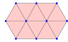
As an example consider the following umbrella descriptor of a simplicial surface on 18 faces.
gap> ud1 := [ (4,21,20,25), (5,7,8,6), (5,9,10,6), (7,11,12,8), (5,9,13,14,11,7), > (6,10,15,16,12,8), (9,13,17,21,20,15,10), (4,25,16,12,11,14,18), > (13,17,18,14), (15,16,25,20), (4,21,17,18) ];; gap> surf1 := SimplicialSurfaceByUmbrellaDescriptor(ud1);; gap> ud2 := NormedUmbrellaDescriptor(ud1, 7, [11, 8, 5]); [ (1,2,5,3), (1,2,6,7,8,4), (1,3,9,4), (2,5,10,11,12,13,6), (3,5,10,14,15,9), (4,8,15,9), (6,7,16,13), (7,8,15,14,17,18,16), (10,11,17,14), (11,12,18,17), (12,13,16,18) ] gap> surf2 := SimplicialSurfaceByUmbrellaDescriptor(ud2);; gap> IsIsomorphic(surf1,surf2); true
Note that this function can also be applied to umbrella descriptors of surfaces which are not closed.
gap> ud1 := [ (1,2,3,4,5), (1,8,7,6,5), (1,8,19,20,9,2), (2,9,10,11,3), > (3,11,12,13,4), (4,13,14,15,6,5), (6,15,16,17,7), (7,17,18,19,8), > [ 10, 9, 20 ], [ 10, 11, 12 ], [ 12, 13, 14 ], > [ 14, 15, 16 ], [ 16, 17, 18 ], [ 18, 19, 20 ] ];; gap> surf1 := SimplicialSurfaceByUmbrellaDescriptor(ud1);; gap> ud2 := NormedUmbrellaDescriptor(ud1, 1, [2, 5, 8]); [ (1,2,5,6,3), (1,2,7,8,9,4), (1,3,10,11,4), (2,5,12,13,7), (3,6,14,15,16,10), (4,9,17,18,11), (5,6,14,19,12), [ 8, 7, 13 ], [ 8, 9, 17 ], (10,11,18,20,16), [ 13, 12, 19 ], [ 15, 14, 19 ], [ 15, 16, 20 ], [ 17, 18, 20 ] ] gap> surf2 := SimplicialSurfaceByUmbrellaDescriptor(ud2);; gap> IsIsomorphic(surf1,surf2); true
‣ DegreeSequenceOfUmbrellaDescriptor( umbdesc ) | ( operation ) |
Returns: a list
Suppose that umdesc is a valid umbrella descriptor of a surface S, see (4.4). The degree sequence of umdesc is a list degseq. If the i-th entry of umdesc is bound, then this entry corresponds to a vertex of S and the i-th entry of degseq is a list [d,b], where d is the degree of the i-th vertex, and the boolean b is true, if the i-th vertex is inner and false else.
gap> vf := [ [ 1, 3, 4 ], [ 1, 2, 4 ], [ 2, 4, 5 ], [ 2, 5, 6 ], > [ 1, 2, 6 ], [ 1, 6, 7 ], [ 1, 7, 8 ], [ 1, 3, 8 ], [ 3, 4, 9 ], > [ 4, 9, 10 ], [ 4, 5, 10 ], [ 5, 10, 11 ], [ 5, 6, 11 ], [ 6, 11, 12 ], > [ 6, 7, 12 ], [ 7, 12, 13 ], [ 7, 8, 13 ], [ 8, 13, 14 ], [ 3, 8, 14 ], > [ 3, 9, 14 ] ];; gap> surf := SimplicialSurfaceByVerticesInFaces(vf); simplicial surface (14 vertices, 33 edges, and 20 faces) gap> ud := UmbrellaDescriptorOfSurface(surf); [ (1,8,7,6,5,2), (2,3,4,5), (1,9,20,19,8), (1,9,10,11,3,2), (3,11,12,13,4), (4,13,14,15,6,5), (6,15,16,17,7), (7,17,18,19,8), [ 10, 9, 20 ], [ 10, 11, 12 ], [ 12, 13, 14 ], [ 14, 15, 16 ], [ 16, 17, 18 ], [ 20, 19, 18 ] ] gap> DegreeSequenceOfUmbrellaDescriptor(ud); [ [ 6, true ], [ 4, true ], [ 5, true ], [ 6, true ], [ 5, true ], [ 6, true ], [ 5, true ], [ 5, true ], [ 3, false ], [ 3, false ], [ 3, false ], [ 3, false ], [ 3, false ], [ 3, false ] ]
‣ AllUmbrellaDescriptorsOfDegreeSequence( degreeseq ) | ( operation ) |
Returns: a list
Given a DegreeSequence of a normed UmbrellaDescriptor for a closed simplicial surface which has no vertices of degree 2, this function returns the umbrella descriptors of all simplicial surfaces which have a normed umbrella descriptor matching this degree sequence.
gap> ud := > [ (1,6,16,5), (1,6,15,4), (2,21,22,3), (9,11,12,10), (11,17,18,12), > (7,9,10,8), (7,13,14,8), (1,4,2,3,5), (17,23,21,22,24,18), > (3,22,24,20,16,5), (2,21,23,19,15,4), (6,16,20,14,13,19,15), > (7,13,19,23,17,11,9), (8,14,20,24,18,12,10) ];; gap> surf := SimplicialSurfaceByUmbrellaDescriptor( ud ); simplicial surface (14 vertices, 36 edges, and 24 faces) gap> nud := NormedUmbrellaDescriptor(ud, 1 ); [ (1,2,5,6,3), (1,2,7,4), (1,3,8,4), (2,5,9,10,11,7), (3,6,12,13,14,8), (4,7,11,15,16,14,8), (5,6,12,9), (9,10,17,18,13,12), (10,11,15,19,20,21,17), (13,14,16,22,23,24,18), (15,16,22,19), (17,18,24,21), (19,20,23,22), (20,21,24,23) ] gap> ds := DegreeSequenceOfUmbrellaDescriptor(nud); [ [ 5, true ], [ 4, true ], [ 4, true ], [ 6, true ], [ 6, true ], [ 7, true ], [ 4, true ], [ 6, true ], [ 7, true ], [ 7, true ], [ 4, true ], [ 4, true ], [ 4, true ], [ 4, true ] ] gap> AllUmbrellaDescriptorsOfDegreeSequence( ds ); [ [ (1,2,5,6,3), (1,2,7,4), (1,3,8,4), (2,5,9,10,11,7), (3,6,12,13,14,8), (4,7,11,15,16,14,8), (5,6,12,9), (9,10,17,18,13,12), (10,11,15,19,20,21,17), (13,14,16,22,23,24,18), (15,16,22,19), (17,18,24,21), (19,20,23,22), (20,21,24,23) ] ]
In some constructions a surface may arrise from the knowledge of its Dress Group, see Section 21.2. In this case, the surface can be reconstructed from its Dress group D = ⟨ θ_0, θ_1, θ_2⟩ by computing the orbits of the dihedral subgroups D_0 = ⟨ θ_1, θ_2⟩, D_1 = ⟨ θ_0, θ_2⟩, D_2 = ⟨ θ_0, θ_1⟩, where \theta_0, \theta_1, \theta_2 are the Dress Involutions, see 21.2-1. In particular, the vertices correspond to the orbits of D_0, the edges correspond to the orbits of D_1, the faces correspond to the orbits of D_2, and incidence is given by non-empty set-intersection.
‣ SimplicialSurfaceByDressGroup( dress ) | ( operation ) |
Returns: a simplicial surface or false
This method takes as input a permutation group dress, and tests, whether dress is the Dress Group of a simplicial surface surf, see Section 21.2. If this is the case, surf is constructed and returned.
gap> tet := Tetrahedron();; gap> dress := DressGroup(tet); Group([(1,7)(2,8)(3,13)(4,14)(5,19)(6,20)(9,15)(10,16)(11,21)(12,22)(17,23)(18,24), (1,3)(2,5)(4,6)(7,9)(8,11)(10,12)(13,15)(14,18)(16,17)(19,21)(20,24)(22,23), (1,2)(3,4)(5,6)(7,8)(9,10)(11,12)(13,14)(15,16)(17,18)(19,20)(21,22)(23,24) ]) gap> surf := SimplicialSurfaceByDressGroup(dress); simplicial surface (4 vertices, 6 edges, and 4 faces) gap> IsIsomorphic(surf, tet); true
If the permutation group dress passed as an argument does not satisfy the conditions of being a dress group of a surface, false is returned.
gap> SetInfoLevel(InfoSimplicial,3); gap> grp:=Group([(1,2)(3,4)(5,6)(7,8),(1,2)(3,5)(4,7)(6,8),(1,3)(2,4)(5,7)(6,8)]); Group([ (1,2)(3,4)(5,6)(7,8), (1,2)(3,5)(4,7)(6,8), (1,3)(2,4)(5,7)(6,8) ]) gap> SimplicialSurfaceByDressGroup(grp); #I the dress relations are not satisfied. false gap> gens := [ ( 1, 6)( 2, 5)( 3, 4)( 7,12)( 8,11)( 9,10), > ( 1, 8)( 2, 7)( 3,12)( 4, 5)( 6, 9)(10,11), > ( 1,12)( 2,11)( 3,10)( 4, 9)( 5, 8)( 6, 7) ]; [ (1,6)(2,5)(3,4)(7,12)(8,11)(9,10), (1,8)(2,7)(3,12)(4,5)(6,9)(10,11), (1,12)(2,11)(3,10)(4,9)(5,8)(6,7) ] gap> SimplicialSurfaceByDressGroup(Group(gens)); #I Faces and vertices can have only 2 common flags false
generated by GAPDoc2HTML